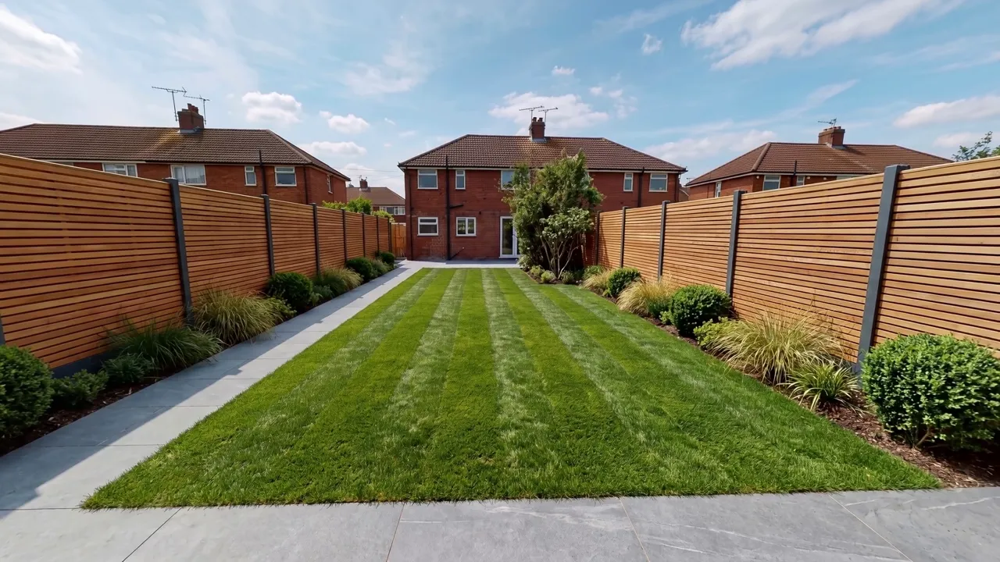
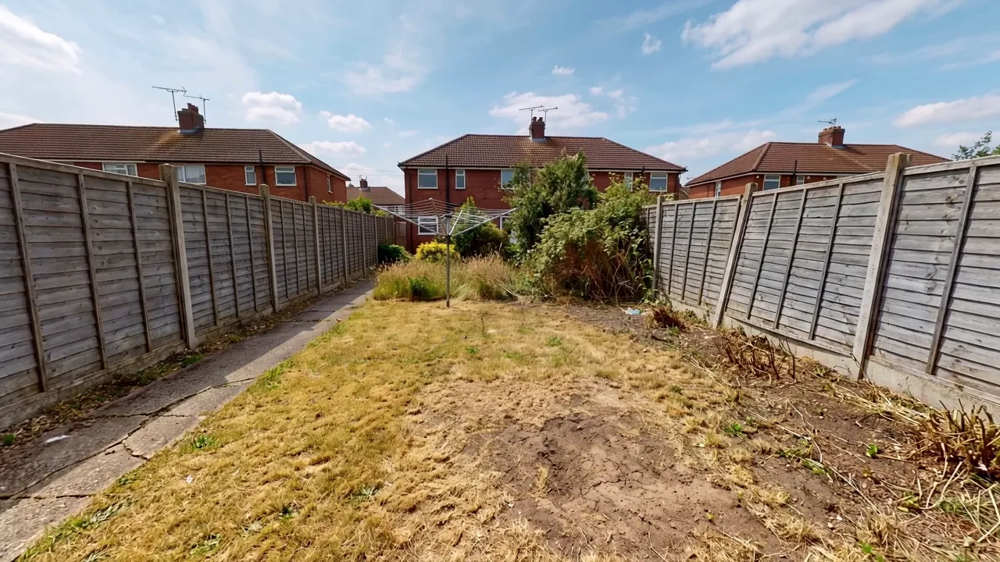
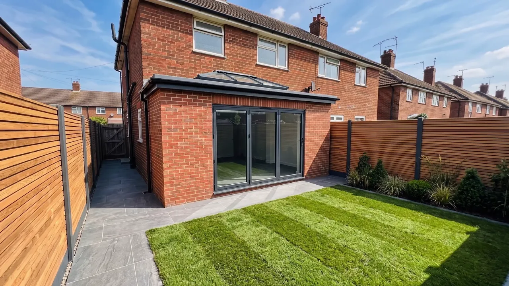
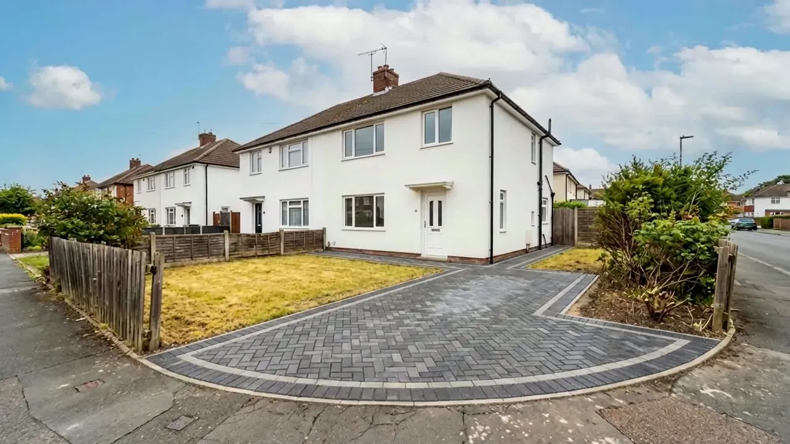

Our work
Fences before and after
Six jobs, old fence and new. Drag across each photo, tap a point on it, or use the Before and After buttons. Want to see a style on its own? Compare the fence styles.


Closeboard on concrete posts
Old lap panels out, closeboard on concrete posts and gravel boards in.


Horizontal slatted, both sides
Old lap panels and a dead lawn out, horizontal slatted fencing both sides and new turf in.


Cedar-tone slatted boundary
Tired panels round a terrace yard out, a cedar-tone horizontal slatted boundary in, with the ground redone.


Front boundary on dark posts
A broken front fence out, a slatted boundary on dark posts round the corner garden in.

Slatted fence with post lights
The finished job: horizontal slats with low lights on the posts, wired by an electrician.


Hit and miss
Old lap panels out, hit and miss boards on both sides in.